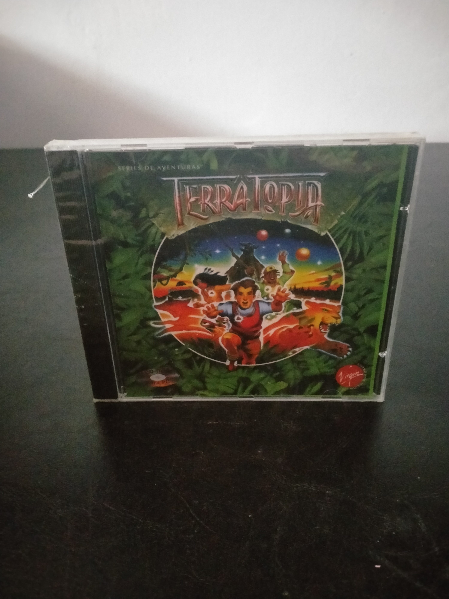

Ficha #000000
TerraTopia
TerraTopia es una aventura gráfica educativa publicada en 1996 y basada en la serie infantil homónima dedicada a la naturaleza y la protección del medioambiente. El jugador se convierte en un terrasoldado y recorre distintos ecosistemas resolviendo puzles, buscando objetos y obteniendo poderes totémicos que permiten adoptar formas animales. Su desarrollo combina exploración en primera persona, escenarios bidimensionales, secuencias animadas y control mediante ratón. Técnicamente fue creado con tecnología Macromedia Director e integra vídeo y sonido mediante QuickTime, elementos habituales en las producciones multimedia en CD-ROM de mediados de los años noventa. Esta primera edición española de la serie de aventuras de Virgin incorpora textos y voces en castellano y constituye un ejemplo representativo del software ludoeducativo comercializado para Windows 3.x y Windows 95.
- Formato
- Jewel Case
- Plataforma
- Win3.x Win95
- Género
- Aventura gráfica Point and click Educativo Infantil Fantasía
- Serie
- Todos Jewel Case
- Desarrollador
- Funsoft
- Distribuidor
- Creative Consultants, Virgin Interactive Entertainment, Virgin Sound and Vision
- EAN
- —
Contenido de la edición
- CD-ROM
Preservación
- Protección
- No determinado
- Formato recomendado
- ISO
- Jugable en virtualización
- Sí
Preservar mediante una imagen completa del CD-ROM y conservar la estructura original de archivos, los componentes de Macromedia Director y la versión de QuickTime incluida. Para una ejecución fiel se recomienda utilizar una máquina virtual con Windows 3.1 o Windows 95, resolución y profundidad de color propias de la época y la versión original de QuickTime suministrada con el juego.